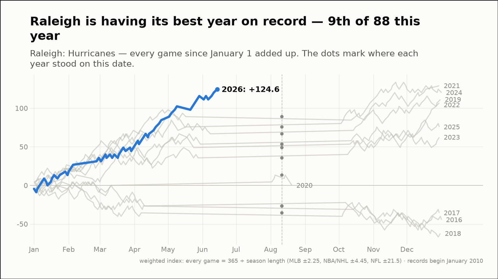
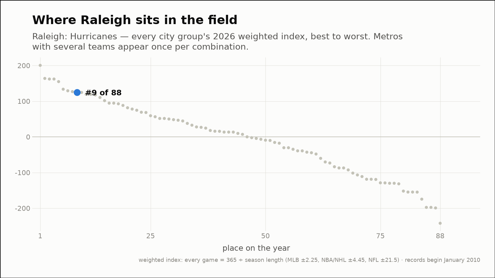
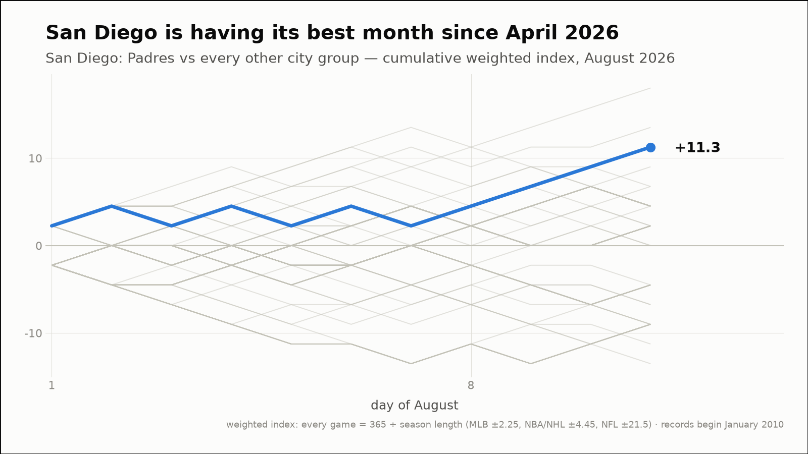
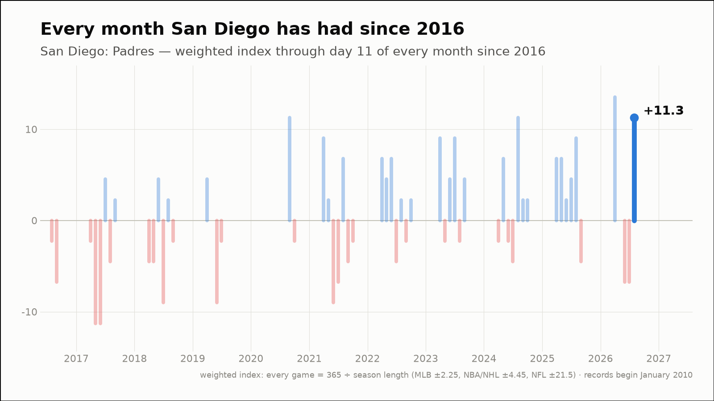
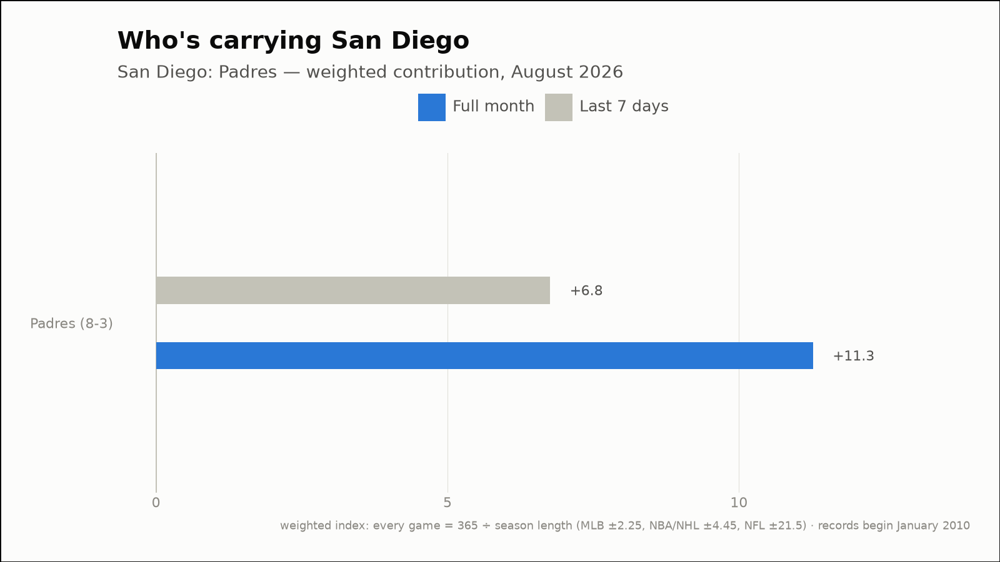
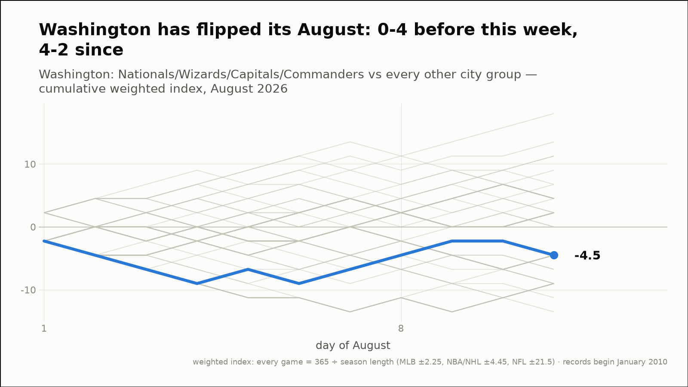
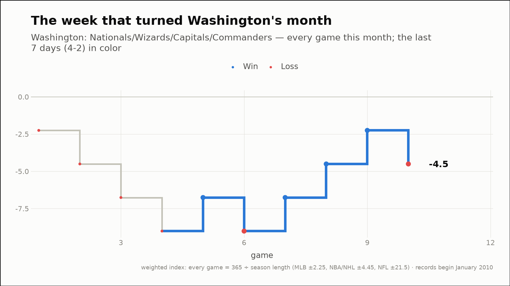
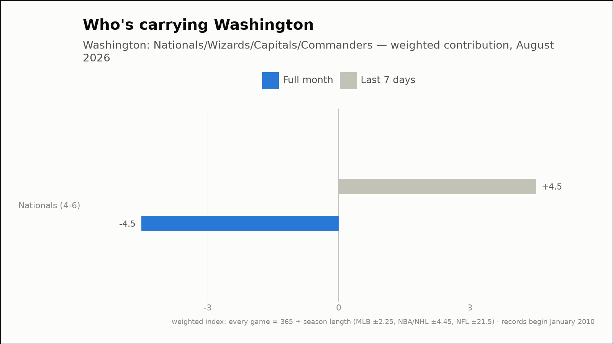

Out of the norm — three fandoms off their own script
The weekly hunt across all 88 city groups, through August 11, 2026
Raleigh is having its best year on record — 9th of 88 this year
Raleigh: Hurricanes
- 2026 so far (through August 11)
- 45-17, +124.6 weighted — 1st-best of the 11 years on record, at the same point
- Against the field
- 9th of 88 city groups on the year (91st percentile)


San Diego is having its best month since April 2026
San Diego: Padres
- This month (through August 11)
- 8-3, +11.3 weighted — 2nd-best of 61 months on record (96th percentile)
- vs past Augusts
- 1st-best August of the 11 on record
- Last 7 days
- 5-2, +6.8 weighted
- Driving it this week
- Padres (5-2, +6.8)
- Active streaks
- Padres W4



Washington has flipped its August: 0-4 before this week, 4-2 since
Washington: Nationals/Wizards/Capitals/Commanders
- Before this week
- 0-4, -9.0 weighted (-2.25 per game)
- Since
- 4-2, +4.5 weighted (+0.75 per game)
- This month (through August 11)
- 4-6, -4.5 weighted
- Last 7 days
- 4-2, +4.5 weighted
- Driving it this week
- Nationals (4-2, +4.5)


